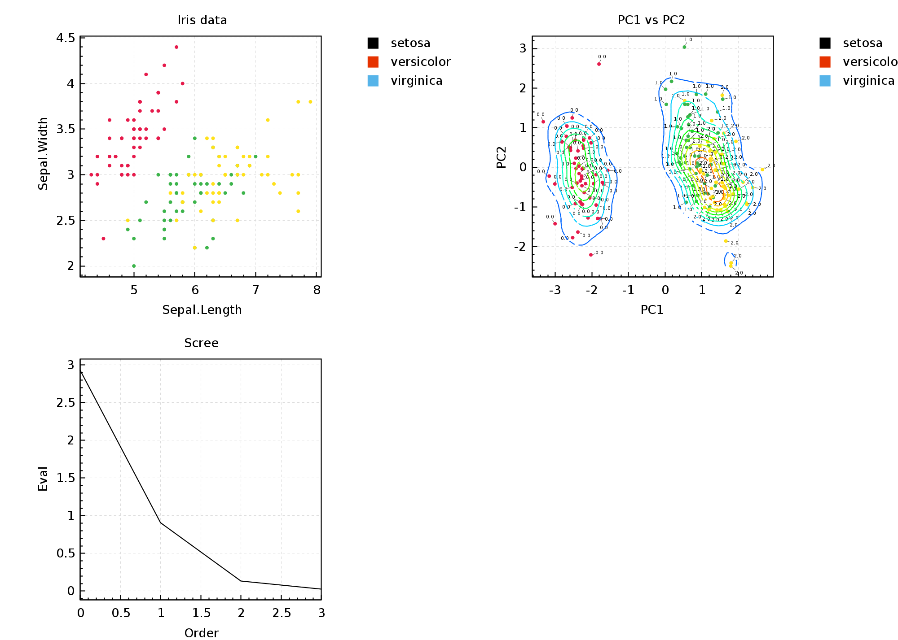
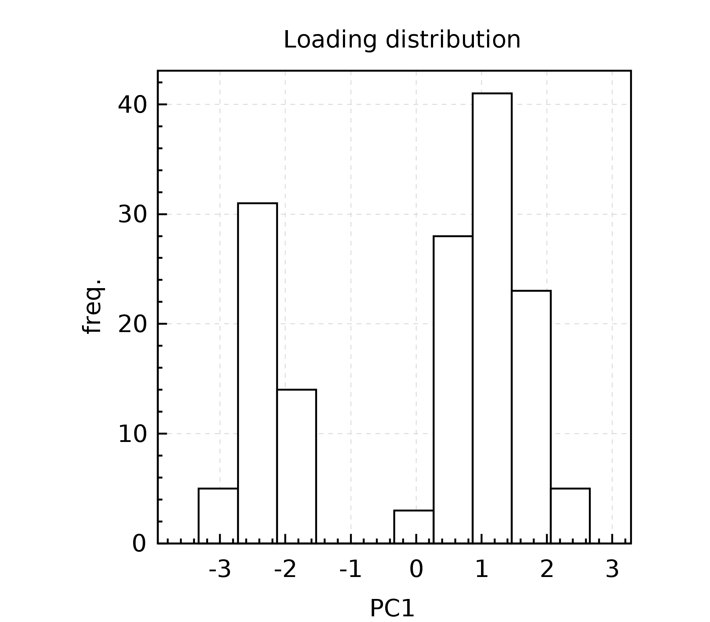
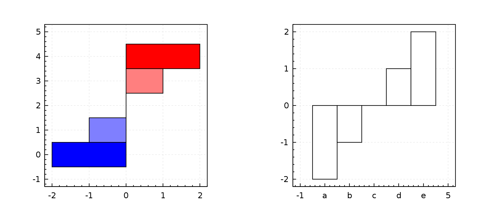
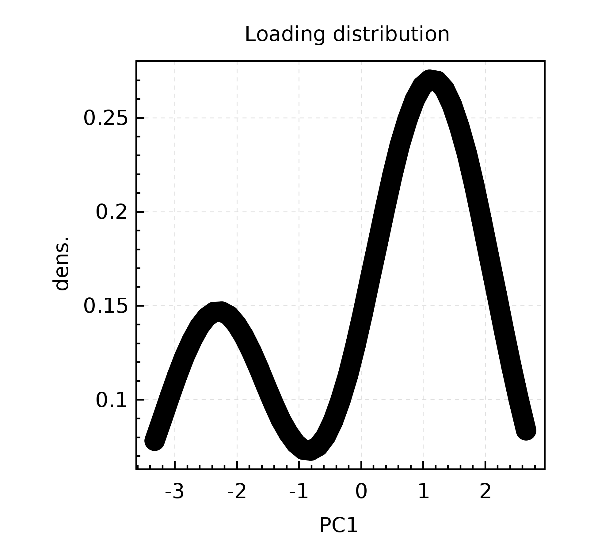
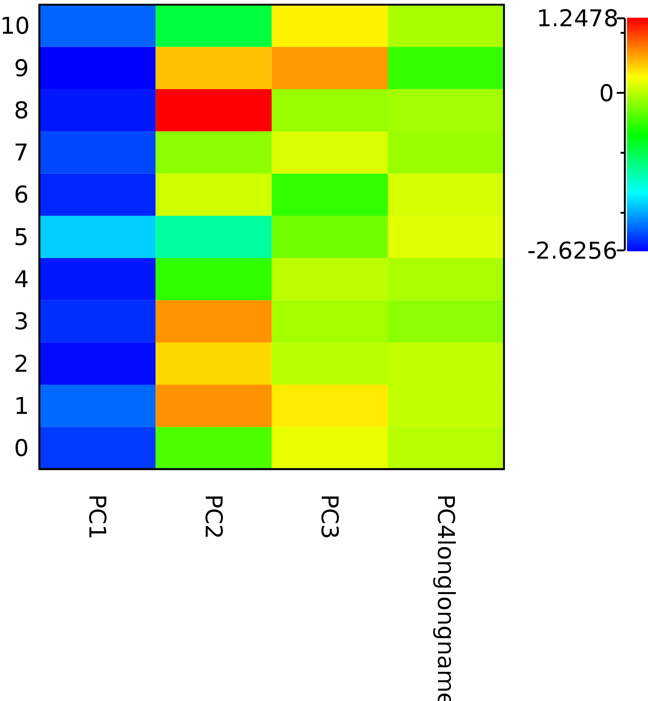
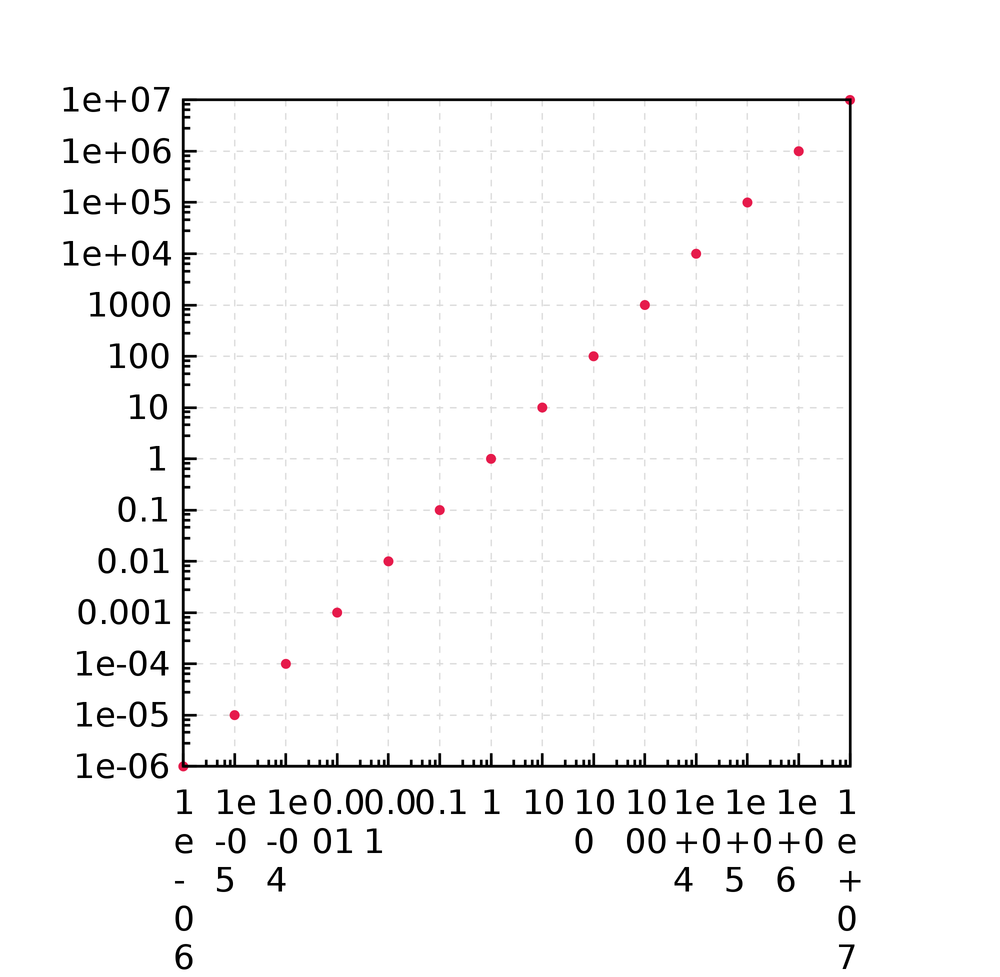

This page lists a diverse collection of plots. They use the PCA of the classical Iris dataset as demo data. To facilitate data manipulation these examples use the Saddle data frame library.
First some utilities and imports:
import org.nspl._
import org.nspl.data.HistogramData
import org.nspl.saddle._
import org.nspl.awtrenderer._
import org.saddle._
import org.saddle.order._
import org.saddle.csv._
import org.saddle.scalar.ScalarTagDouble
import org.saddle.index.InnerJoin
def readFrameFromClasspath(s: String) =
CsvParser
.parseSourceWithHeader[String](
scala.io.Source
.fromInputStream(
getClass.getResourceAsStream(s)
),
recordSeparator = "\n"
)
.toOption
.get
Next read and parse some data:
val evec = readFrameFromClasspath("/evec.csv").mapValues(ScalarTagDouble.parse)
val rotated =
readFrameFromClasspath("/rotated.csv").mapValues(ScalarTagDouble.parse)
val data = readFrameFromClasspath("/data.csv")
.mapValues(ScalarTagDouble.parse)
.colAt(Array(0, 1, 2, 3))
val species = readFrameFromClasspath("/data.csv").colAt(4)
val spec2Num = species.toVec.toSeq.distinct.sorted.zipWithIndex.toMap
val spec: Series[Int, Double] =
species.mapValues(spec2Num).mapValues(_.toDouble)
val eval = readFrameFromClasspath("/sqrteigen.csv")
.mapValues(ScalarTagDouble.parse)
.mapValues(x => x * x)
val data2 = data.addCol(spec, "spec", InnerJoin)
Plot Gallery #
Scatter plots #
val fig0 = xyplot(
data2.col("Sepal.Length", "Sepal.Width", "spec")
)(
par(extraLegend = spec2Num.toSeq.map(x =>
x._1 -> PointLegend(
shape = Shape.rectangle(0, 0, 1, 1),
color = DiscreteColors(spec2Num.size)(x._2)
)
),
xlab = "Sepal.Length",
ylab = "Sepal.Width",
main = "Iris data")
)
val fig1 = xyplot(
Frame(
(rotated.col("PC1", "PC2").toColSeq :+ ("spec" -> spec)): _*
) -> point(
valueText = true
),
density2d(
rotated.firstCol("PC1").toVec.toSeq zip rotated
.firstCol("PC2")
.toVec
.toSeq
)
)(
par(extraLegend = spec2Num.toSeq.map(x =>
x._1 -> PointLegend(
shape = Shape.rectangle(0, 0, 1, 1),
color = DiscreteColors(spec2Num.size)(x._2)
)
),
xlab = "PC1",
ylab = "PC2",
main = "PC1 vs PC2")
)
val scree = xyplot(
indexed(eval.firstCol("x").toVec.toSeq.sorted.reverse) -> line()
)(
par(xAxisMargin = 0,
xlab = "Order",
ylab = "Eval",
main = "Scree"
))
renderToByteArray(
group(fig0,fig1,scree,TableLayout(2)).build,
width=2000)
The above code block produces this plot: 
Histogram #
val hist1 = xyplot(
HistogramData(rotated.firstCol("PC1").toVec.toSeq, 10) -> bar()
)(
par(xlab = "PC1",
ylab = "freq.",
main = "Loading distribution",
ylim = Some(0d, Double.NaN))
)
renderToByteArray(hist1.build,width=2000)
The above code block produces this plot: 
Bar plots #
val bar1 = barplotVertical(
Series("a" -> (-2d), "b" -> (-1d), "c" -> 0d, "d" -> 1d, "e" -> 2d),
color = RedBlue(-2, 2)
)(par())
val bar2 = barplotHorizontal(
Series("a" -> (-2d), "b" -> (-1d), "c" -> 0d, "d" -> 1d, "e" -> 2d)
)(par())
renderToByteArray((group(bar1,bar2,TableLayout(2))).build,width=2000)
The above code block produces this plot: 
Density plot #
val density1 = xyplot(
density(rotated.firstCol("PC1").toVec.toSeq) -> line(
stroke = StrokeConf(1 fts)
)
)(par(xlab = "PC1", ylab = "dens.", main = "Loading distribution"))
renderToByteArray(density1.build,width=2000)
The above code block produces this plot: 
Raster plot #
import org.nspl.saddle.rasterplotFromFrame
val raster1 = rasterplotFromFrame(
rotated.rowAt(0 -> 10),
yLabFontSize = Some(0.5 fts))(par())
renderToByteArray(raster1.build,width=2000)
The above code block produces this plot: 
Density raster #
val densmap = rasterplot(
densityMatrix(
rotated.firstCol("PC1").toVec.toSeq zip rotated
.firstCol("PC2")
.toVec
.toSeq
)
)(par())
renderToByteArray(densmap.build,width=2000)
The above code block produces this plot:
Box plots #
val fig4 = boxplot(
data2
.firstCol("Sepal.Length")
.toVec
.toSeq -> data2.firstCol("Sepal.Width").toVec.toSeq,
xnames = Seq("Sepal Length", "Sepal Width"),
)(par(ylab = "Sepal Length",
xLabelRotation = -0.3))
val boxpl2 =
boxplotFromLabels(List("a" -> 0d, "a" -> 1d, "b" -> 3d, "b" -> 4d))(par())
renderToByteArray(group(fig4,boxpl2,TableLayout(2)).build,width=2000)
The above code block produces this plot:
Scatter on log axis #
val logaxis =
xyplot(
Seq(
1e-6 -> 1e-6,
1e-5 -> 1e-5,
1e-4 -> 1e-4,
1e-3 -> 1e-3,
1e-2 -> 1e-2,
1e-1 -> 1e-1,
1d -> 1d,
10d -> 10d,
1e2 -> 100d,
1e3 -> 1000d,
1e4 -> 10000d,
1e5 -> 1e5,
1e6 -> 1e6,
1e7 -> 1e7
) -> point()
)(par(ylog = true, xlog = true))
renderToByteArray(logaxis.build,width=2000)
The above code block produces this plot: 